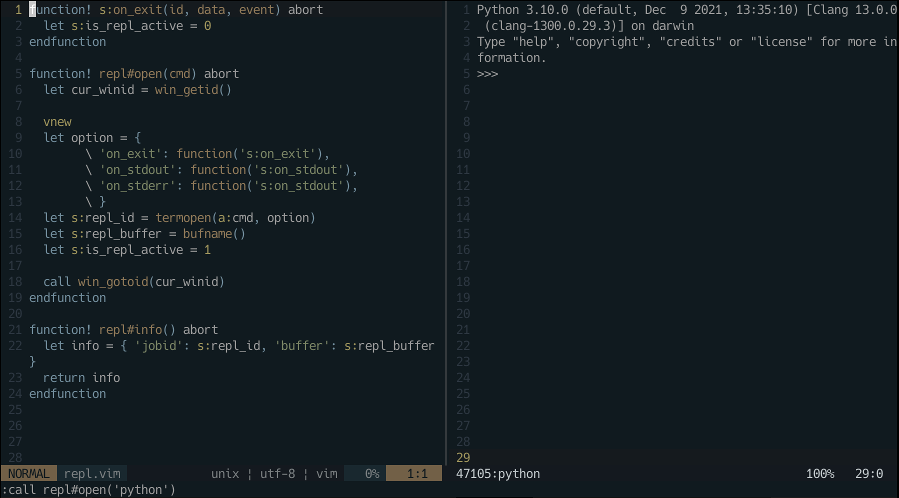

動機
研究で使っているソフトウェアのREPLが少し使いづらい。というのも、制御文字がそのまま表示されてしまうため、十字キーのカーソル移動やCmd + Aの行先頭移動、Cmd + Kの行削除など効かないからだ。
rlwrap を使えばこの問題を解決できるのだが、別の解決案としてNeovimのREPL支援プラグインを作ってみようと思い立った。
Neovim のターミナル機能を使ってREPLを起動し、別バッファー上で入力した文字列をREPLに送るようなプラグインを作りたい。
GitHubで検索してみると同様の機能を実現するプラグインはいくつもあるようだが(例えば、vim-slime)、プラグインを作る勉強として、自分で作ってみる。
提供する機能
使用感をvlimeと似たものにしたい。キーマップは次のようにする。
<LocalLeader>ss カーソル下の行をREPLに送る。<LocalLeader>s 選択範囲内行の文字列をREPLに送る。<LocalLeader>i 1行入力用のバッファを表示し、そこで書いた文字列をREPLに送る。<LocalLeader>cd Ctrl + DをREPLに送る。<LocalLeader>cc Ctrl + CをREPLに送る。
その他、以下のコマンドを定義する。
ReplOpen [cmd]: REPLを起動する。例えばReplOpen pythonならpythonのREPLが起動する。
[cmd]には任意のコマンドが入れられるため、REPL支援というよりターミナル支援プラグインという感じがするが、気にしないことにする。ReplSend [string]: 文字列[string]をREPLに送る。
補足 vlimeとキーマップが被るため、vlimeを入れている人はどうするんだという事になる。
その場合、キーマップが被らないようにしたり、ftplugin下にスクリプトを書くなど色々と方法が考えられる。
ここでは一番無難そうな、「ReplOpenが呼び出された時にキーマップを登録する」という方法を採用する。
注意
普段使っているのがVimではなくNeovimなので、Neovimを使ってプラグインを書く。Vimには無い関数/機能を使うので注意。
あとVim scriptをほとんど書いたこと無いため、今回載せるコードには色々改善点があるだろう。
準備
適切なディレクトリにプラグインのディレクトリを作成。自分の環境では、packpathの1つに~/.config/nvimがあったので、
~/.config/nvim/pack/plugins/start/に置く。プラグインのディレクトリは愚直にrepl.nvimとする
そこにautoload、plugin、ftpluginディレクトリを作成する。
repl.nvim
|
+-- autoload/
| |
| +-- repl.vim
|
+-- plugin/
|
+-- repl.vim
REPLの起動
autoload/repl.vimに色々関数を定義する。
まずはREPLの起動から。ウインドウを分割し、ターミナルを起動し、コマンドcmdを実行する関数は素朴には以下のように書ける。
function! repl#open(cmd) abort
vnew
call termopen(a:cmd)
endfunction
「a:変数名とかs:変数名って何？」と初めは思ったが、これの答えは:h internal-variablesにある。
a:は関数の引数を表し、s:はこのスクリプト内の変数を表す。
functionに!をつけた場合、同名の関数があった場合に上書きする。abortがついた場合、エラーが発生した際に関数をすぐに抜ける。これは:h user-functionに載っている。
(注意) termopen関数はVimには無いはずなので、この時点でNeovimでないと動かない。Vimだとterminalコマンドを
使えばターミナルが起動できるはずだが、詳しくは未調査。
後々ターミナルに文字列を送るなどをしたいため、バッファーやジョブの情報を保存しておきたい。
さらにカーソルがターミナルのウインドウに持っていかれないようにもしたい。
以上を踏まえると、以下のように書けば良いだろう。
termopen関数はジョブのIDを返り値とするので、それをs:repl_idに保存。
bufnameを無引数で呼び出すと現在のバッファー名を返すので、それをs:repl_bufferに保存。
元のウインドウに戻るために、一旦win_getidに元のウインドウのIDを保存しておいて、最後にwin_gotoidで移動する。
function! repl#open(cmd) abort
let cur_winid = win_getid()
vnew
let s:repl_id = termopen(a:cmd, option)
let s:repl_buffer = bufname()
call win_gotoid(cur_winid)
endfunction
ターミナルが終了した場合の処理も付け加えておこう。REPLが動作中かどうかをフラグs:is_repl_activeで管理し、終了した場合はフラグを0にする。
実はtermopen関数のイベントハンドラとしてon_exitが指定できる(他のハンドラについては:h termopenを参照)。
Vim scriptでは関数と変数の名前空間が別らしく、関数の参照を取得するにはfunction関数を使う。
というわけで以下が最終形。
function! s:on_exit(id, data, event) abort
let s:is_repl_active = 0
endfunction
function! repl#open(cmd) abort
let cur_winid = win_getid()
vnew
let option = { 'on_exit': function('s:on_exit') }
let s:repl_id = termopen(a:cmd, option)
let s:repl_buffer = bufname()
let s:is_repl_active = 1
call win_gotoid(cur_winid)
endfunction
実際に:source autoload/repl.vimで読み込んで、repl#open関数が正しく動くかテストしてみると良い。
以下は:call repl#open('python')でPythonのREPLを起動した例。

デバッグ用に、保存したジョブIDとバッファ名を返す関数を作っておく。
function! repl#info() abort
let info = { 'jobid': s:repl_id, 'buffer': s:repl_buffer }
return info
endfunction
文字列をREPLに送る
基本はこれだけである。ターミナルに対してchansendで文字列を送れば良い。
function! repl#send(data) abort
if s:is_repl_active
call chansend(s:repl_id, a:data)
endif
endfunction
としたいところなのだが、REPLが1度も起動していないときにこのコマンドを打つと以下のエラーが出る。
E121: Undefined variable: s:is_repl_active
REPLが起動していない時はs:is_repl_activeが未定義なのである。そのため、定義済みかどうかもチェックする必要がある。
実はs:is_repl_activeは、s:という辞書のキー'is_repl_active'としてアクセスできる(:h internal-variables参照)。
get関数を使えば、辞書のキーが存在しなければデフォルト値を返すようにできるので、次のように書き変えれば今回の問題は解決できる。
function! repl#send(data) abort
if get(s:, 'is_repl_active', 0)
call chansend(s:repl_id, a:data)
endif
endfunction
ただしこれだけだと、末尾に改行が加えられないので不十分。なので改行を加えて送信する関数repl#sendlnも作成する。
ここで注意したいのはchansendの引数で、:h chansendによると、第2引数に指定するデータは文字列、文字列のリスト、Blob
の3つの可能性がある。今回送りたいのは文字列なのでBlobは無視する。それぞれ次のように送信されるらしい。
- 文字列はそのまま送信。
- 文字列のリストの場合、それぞれの要素が
\nで連結されて送信。
これを踏まえて、2つの場合で処理を分ける。変数の型はtype関数で取得できる。型名はv:t_型名で扱われている。
詳しくは:h typeを参照。
文字列の連結は.で行える。リストの追加はadd関数で行える。
function! repl#sendln(data) abort
if type(a:data) == v:t_string
call repl#send(a:data . "\n")
elseif type(a:data) == v:t_list
call add(a:data, '')
call repl#send(a:data)
endif
endfunction
現在のカーソル下の行をREPLに送る関数は次のように書ける。getline('.')でカーソル下の行を取得できる。
function! repl#send_curline() abort
let line = getline('.')
call repl#sendln(line)
endfunction
選択範囲をREPLに送る関数は次のように書ける。関数定義にrangeを指定すると、a:firstline、a:lastlineで選択行が取得できる。
function! repl#send_visual() abort range
let lines = getline(a:firstline, a:lastline)
call repl#sendln(lines)
endfunction
ターミナルを最下に自動スクロールさせる
ターミナルに文字列を送っていると、画面下へとはみ出てしまい見えなくなる。そのため、ターミナル画面を自動で下にスクロールさせる仕組みが必要である。
これを実現するためには、素朴には以下の手順を踏めば良い。
- ターミナルのウインドウに移動。
$コマンドを実行してカーソルを最下に移動。- 元のウインドウに戻る。
実はターミナルに移動する手間を省くことができて、それにはwin_execute関数を使えば良い。これは指定されたウインドウに対してコマンドを実行する関数である。
s:repl_bufferが存在するか、ウインドウが存在するかなどの確認処理を加えると、最終的な関数は以下のようになる。
function! repl#move_bottom() abort
if exists('s:repl_buffer')
let winid = bufwinid(s:repl_buffer)
if winid != -1
call win_execute(winid, '$')
endif
endif
endfunction
画面がスクロールする処理は、ターミナルに文字列が出力された際に行われるようにしたい。
そのためのイベントハンドラをtermopen関数の引数に指定。
function! s:on_stdout(id, data, event) abort
call repl#move_bottom()
endfunction
function! repl#open(cmd) abort
// 略
let option = {
\ 'on_exit': function('s:on_exit'),
\ 'on_stdout': function('s:on_stdout'),
\ 'on_stderr': function('s:on_stdout'),
\ }
let s:repl_id = termopen(a:cmd, option)
// 略
endfunction
入力用バッファーの作成
画面下に1行入力用のバッファーを表示させたい。以下のような、2行の高さを持つバッファーを作る。
画面の高さを指定した新しいバッファーを作るためには、[高さ]split [バッファ名]とコマンドを実行すれば良い。
出てきたウインドウは、デフォルトだとおそらく画面上に表示される。これを下に持っていくためにbotrightと組み合わせる。
botright 2split REPL-Input
以上で適切な高さのバッファーが作れた。続いて文字列Inputと空行を挿入。カーソルを2行目に移動させる。
call setline(1, ['Input:', ''])
call cursor(2, 0)
さて入力した文字列をREPL送信する関数を作っておく。バッファの2行目を送信し、bwipeoutでバッファを閉じる。
function s:send_input() abort
call repl#sendln(getline(2))
bwipeout!
endfunction
開いたバッファーに対してキーマップを登録する。qキーが押されたときはバッファを閉じる。
Enterキーが押された時はsend_input()を実行。スクリプトローカルな関数(s:がついた関数)をコマンドに登録する際には、s:ではなく<SID>を指定する。map系のコマンドはたくさんあるので詳しくは:h map-commands参照。
<C-u>は数字や範囲指定などの余分な文字列を削除するために用いている。これは:h c_CTRL-Uに載っている。
nnoremap <silent> <buffer>
\ q
\ :<C-u>bwipeout!<CR>
nnoremap <silent> <buffer>
\ <CR>
\ :<C-u>call <SID>send_input()<CR>
以上をまとめると、入力バッファを開く関数、入力文字列を送信する関数は次のようになる。
すでにウインドウが存在した場合は移動するように条件分岐を行っている。
文字列を展開してコマンドを実行するためにexecuteコマンドを使っている。
let s:input_buffer = 'REPL-Input'
function s:send_input() abort
call repl#sendln(getline(2))
bwipeout!
endfunction
function! repl#open_input() abort
let winid = bufwinid(s:repl_buffer)
if winid != -1
call win_gotoid(winid)
else
execute 'botright' '2split' s:input_buffer
call setline(1, ['Input:', ''])
call cursor(2, 0)
nnoremap <silent> <buffer>
\ <CR>
\ :<C-u>call <SID>send_input()<CR>
nnoremap <silent> <buffer>
\ q
\ :<C-u>bwipeout!<CR>
endif
endfunction
コマンド・キーマップの登録
まず、autoload/repl.vim側で、キーマップを登録する関数を作っておく。
function! repl#map_keys() abort
nnoremap <silent> <LocalLeader>ss
\ :<C-u>call repl#send_curline()<CR>
vnoremap <silent> <LocalLeader>s
\ :call repl#send_visual()<CR>
nnoremap <silent> <LocalLeader>i
\ :<C-u>:call repl#open_input()<CR>
nnoremap <silent> <LocalLeader>cd
\ :<C-u>:call repl#send("\<C-d>")<CR>
nnoremap <silent> <LocalLeader>cc
\ :<C-u>call repl#send("\<C-c>")<CR>
endfunction
plugin/repl.vimを編集する。まずプラグインが二重ロードされるのを防ぐための文を書く
(このイディオムは:h write-pluginのNOT LOADINGの項に載っている)。
if exists('g:loaded_repl_nvim')
finish
endif
let g:loaded_repl_nvim = 1
目的のコマンドを登録する。commandコマンドで複数のコマンドを実行したい場合、-barオプションをつけて|で区切ってコマンドを記述する点に注意。ReplOpenコマンドでは、REPLを開く関数とキーマップを登録する関数の両方を呼び出している。
command! -bar -nargs=1 ReplOpen call repl#open(<q-args>) | call repl#map_keys()
command! -nargs=1 ReplSendln call repl#sendln(<q-args>)
<LocalLeader>について。自分で対応するキーを、init.nvimに設定しておく。例えば<LocalLeader>にスペースキーを割り当てたいなら、以下のようにする。
let g:maplocalleader = ' '
完成したもの
完成品を、一応GitHubのRepositryに上げておいた。